<mat-toolbar class="max-shadow" style="background-color: #003A81">
  <button style="color:white; margin-right: 20px;" mat-icon-button (click)="sidenav.toggle()">
    <mat-icon class="material-icons md-48">menu</mat-icon>
  </button>
  <a routerLink="/">
      
      <span style="color: white">MAX</span>
  </a>
</mat-toolbar><!--Toolbar Ende-->

<mat-sidenav-container class="menu-container">
    <mat-sidenav #sidenav class="menu-sidenav">
        <mat-nav-list>
          <a mat-list-item routerLink="/">Suchen</a>
          <a mat-list-item routerLink="/mydiagnoses">Erstellte Diagnosen</a>
          <a mat-list-item routerLink="/mysymptoms">Erstellte Symptome</a>
          <a mat-list-item routerLink="/categories">Kategorien</a>
          <a mat-list-item (click)="logout()">Logout</a>
        </mat-nav-list>
    </mat-sidenav><!--Routen ende-->
    <router-outlet></router-outlet>
</mat-sidenav-container>

<!--<a routerLink='/' class="link">Dashboard</a>-->
<!--<a mat-list-item href="..." *ngFor="let link of links"> {{ link }} </a>-->

